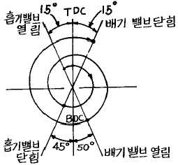
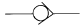
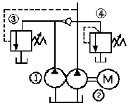
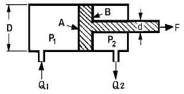

건설기계정비산업기사 (2004-08-08 기출문제)
1과목: 건설기계정비
1. 공기압축기의 압축시간이 규정보다 많이 걸린다. 그 원인으로 볼 수 없는 것은?
- 에어클리너의 불량
- 체크밸브의 불량
- V벨트의 장력 조정이 느슨하다.
- 오일이 부족하다.
(정답률: 54%)

2. 토크 컨버터의 구성요소를 적은 것이다. 아닌 것은?
- 디스크
- 스테이터
- 임펠러
- 터빈
(정답률: 77%)
3. 다음은 도저(dozer)의 종류를 나타낸 것이다. 이 중 틀린 것은?
- 스트레이트 불도저(straight bulldozer)
- 앵글 도저(angle dozer)
- 틸트 도저(tilt dozer)
- 블레이드 도저(blade dozer)
(정답률: 71%)
4. 가변용량 펌프에서 일정한 회전속도로서 흐름비율을 변경시키는 방법은?
- 계통 내의 저항을 감소시킨다.
- 릴리프 밸브의 압력을 낮춘다.
- 회전경사판의 각도를 변경시킨다.
- 펌프의 회전방향을 변경시킨다.
(정답률: 77%)
5. 변속기를 2단에 넣고 운전했다. 이때 기관의 토크는 30kgf-m, 추진축의 회전수는 400 rpm, 뒷바퀴의 회전수는 80 rpm, 변속기 2단의 감속비는 6.5이다. 이 건설기계 구동바퀴에 전달되는 토크는 얼마인가? (단, 기계적 손실은 없는 것으로 한다.)
- 780 kgf-m
- 975 kgf-m
- 1,100 kgf-m
- 1,200 kgf-m
(정답률: 55%)
6. 다음 중 유압식 모터그레이더의 전륜경사 작동은 어느 것으로 하는가?
- 스티어링 실린더
- 리이닝장치
- 어큐뮬레이터
- 유압모터
(정답률: 57%)
7. 크랭크 축의 비틀림 진동 방지방법 중 틀린 것은?
- 크랭크 축의 고유 진동수를 변경시킨다.
- 감쇄 작용체를 제거한다.
- 감쇄 작용을 하지 않는 진동체를 다시 설치한다.
- 폭발 순서를 변경한다.
(정답률: 45%)
8. 방향지시등의 점멸이 느린 원인으로 옳지 않은 것은?
- 전구의 접지 불량
- 축전지의 방전 (용량 저하)
- 배선의 접촉 불량
- 발전기 'N' 단자의 접촉 불량
(정답률: 67%)
9. 유압회로내에 캐비테이션 현상이 발생했을 경우 유압유의 상태는?
- 과냉 상태
- 포화 상태
- 과포화 상태
- 표준 상태
(정답률: 74%)
10. 콘크리트 배칭 플랜트의 구조가 아닌 것은?
- 골재 가열장치
- 재료 저장소
- 공급장치
- 계량 장치
(정답률: 50%)
11. 고장진단에 임하였더니 다음과 같은 결과가 나타났다. 1)저속에서 엔진이 정지된다. 2)힘이 부족하다. 3)시동시 엔진이 과속된다. 4)엔진회전속도가 안정되지 않는다. 각 항 공히 적용되는 원인은?
- 조속기(Govener)에 문제가 있다.
- 엔진이 실화된다.
- 엔진의 오일량이 너무 많다.
- 연료계통의 연료압력이 낮다.
(정답률: 90%)
12. 굴삭기에서 버킷 실린더 내경이 80 mm, 작용압력이 35 kgf/cm2일 때 버킷에 작용하는 힘은 얼마인가?
- 280 kgf
- 2800 kgf
- 175.9 kgf
- 1759 kgf
(정답률: 60%)
13. 디젤기관의 실린더 헤드 정비에 관한 내용 중 틀린 것은?
- 엔진이 과열되거나 동결되면 헤드 변형이 예상된다.
- 헤드 개스킷이 파손되었을 때는 카본이 퇴적되지 않는다.
- 헤드에 균열이 가면 실린더간의 압력 차이로 인해 시동이 잘 걸리지 않는다.
- 스틸 개스킷은 강판만으로 제작하여 초고온, 고압축 디젤엔진에 주로 사용한다.
(정답률: 75%)
14. 타이어식 건설기계에서 브레이크 드럼의 표준내경이 3⑤mm인 것이 편마모가 되어 307 mm로 연삭하였을 때 선택해야 할 슈의 오버사이즈 크기는 얼마로 하는 것이 좋은가?
- 1 mm
- 2 mm
- 3 mm
- 4 mm
(정답률: 46%)
15. 기동 전동기의 홀드인 코일의 주된 역할은?
- 배터리의 +단자와 -단자를 연결시키는 역할
- 전기자코일에 전원을 공급하는 역할
- 단속기를 움직이는 역할
- 플라이 휠의 링기어와 전기자의 피니언기어 물림상태 유지
(정답률: 75%)
16. 기관 실린더의 행정이 150 mm, 지름이 150 mm이고, 기관회전 속도가 3000 rpm인 기관의 밸브 지름(mm)은? (단, 밸브 포트(Port)를 통과하는 가스의 속도는 60 m/s이다.)
- 30
- 45
- 55
- 75
(정답률: 43%)
17. 유압장치에서 오일필터의 종류를 나타낸 것이다. 이 중 틀린 것은?
- 흡입 스트레이너
- 고압 필터
- 코일 필터
- 자석 스트레이너
(정답률: 40%)
18. 도저의 언더 캐리어 부품이 아닌 것은?
- 트랙프레임
- 트랙롤러
- 리퍼
- 트랙
(정답률: 79%)
19. 건설기계에 사용되는 충전용 AC발전기에 대한 설명 중 틀린 것은? (단, Iℓ은 선전류, Ip는 상전류임)
- Y결선에서 Iℓ = √3 Ip
- Δ 결선에서 Iℓ = √3 Ip
- 3상 결선에서 전파정류를 하기 위하여 정류기가 6개 설치되어 있다.
- 타여자방식이 거의 사용된다.
(정답률: 47%)
20. 휠 로더에서 핸들이 역방향으로 돌아가는 원인은?
- 먼지 등의 흡입으로 스풀 또는 슬리브의 고착이 있을 때
- 릴리프 밸브의 설정압력이 너무 낮다.
- 배압이 크다.
- 오비트롤 밸브 타이밍 조립이 잘못 되었다.
(정답률: 62%)
2과목: 내연기관
21. 로우터리기관(Wankel 기관)이 피스톤기관에 대비하여 갖는 장점이 아닌 것은?
- 회전운동이므로 진동이 적다.
- 로우터의 1회전 당 3사이클이 수행되므로 배기용적당 출력이 크다.
- 고속회전에 적합하다.
- 기관의 마력당 중량이 크다.
(정답률: 28%)
22. 가솔린 기관에서 행정의 길이 10 cm 매분 회전수가 3600rpm이다. 이 때의 피스톤 평균속도는 몇 m/s인가?
- 8
- 9
- 6
- 12
(정답률: 18%)
23. 가솔린 자동차의 흡기계에 외기 도입 덕트를 설치하는 방법으로서 잘못된 것은?
- 비, 눈 등이 흡입되지 않도록 하기 위하여 동압을 받는 곳을 피한다.
- 정압을 받는 곳을 피한다.
- 차가운 외기를 도입하는 장소를 택한다.
- 흡기 맥동에 의한 소음을 저감시키는 장소를 택한다.
(정답률: 38%)
24. 그림과 같은 밸브 개폐시기 선도에서 밸브 오버랩은 몇 도인가?

- 30°
- 55°
- 65°
- 95°
(정답률: 58%)
25. 어느 4행정 1사이클 4실린더 스퀘어엔진의 실제 흡입공기량이 1117.5 cc이다. 체적효율은? (단, 실린더 지름은 78 mm 이다.)
- 80 %
- 75 %
- 70 %
- 65 %
(정답률: 38%)
26. 발열량 11000 kcal/kgf의 연료로 가솔린 기관을 운전하니 연료소비율이 210 g/ps.h이었다. 제동열효율은?
- 25.4 %
- 26.4 %
- 27.4 %
- 33.1 %
(정답률: 30%)
27. 도시연료소비율의 향상과 거리가 가장 먼 것은?
- 압축비의 감소
- 냉각손실 저감
- 펌프손실 저감
- 시간손실 저감
(정답률: 59%)
28. 디젤기관의 이론 사이클인 정압사이클의 P-V 선도 구성으로 맞는 것은?
- 2개의 정적과정과 2개의 단열과정
- 2개의 정적과정과 2개의 등온과정
- 1개의 정압과정과 1개의 정적과정과 2개의 등온과정
- 1개의 정압과정과 1개의 정적과정과 2개의 단열과정
(정답률: 52%)
29. 가솔린 기관의 안티노크성을 표시하는 연료 중 이소옥탄의 분자식은?
- C8H18
- C7H16
- C7H14
- C8H12
(정답률: 59%)
30. 4행정 사이클 디젤기관의 성능에 영향을 미치는 인자로 가장 관계가 적은 것은?
- 부스트 압력
- 흡기관 온도
- 배기관 온도
- 배압
(정답률: 65%)
31. 어느 연료 1 kgf의 발열량은 9600 kcal이다. 시간당 연료가 18 kgf 소요되고, 발생 열량이 모두 일로 된다면 발생 동력은 몇 PS인가?
- 197.9
- 200.9
- 273.4
- 327.3
(정답률: 46%)
32. 2행정 사이클 엔진의 소기 방법 중 포핏 밸브(poppet valve)로 배기를 하는 것은 어느 것인가?
- 루프 소기(loop scavenging)
- 성층 소기(stratified scavenging)
- 횡단 소기(cross scavenging)
- 단류 소기(uniflow scavenging)
(정답률: 30%)
33. 실린더의 총 체적이 320cm3, 압축비 8인 기관의 행정체 적은 얼마인가?
- 280cm3
- 240cm3
- 360cm3
- 40cm3
(정답률: 27%)
34. 디젤기관의 연소 진행과정에 속하지 않는 기간은?
- 착화지연기간
- 인화연소기간
- 제어연소기간
- 급격연소기간
(정답률: 43%)
35. 열기관의 효율이 100 %가 될 수 없음을 설명한 법칙은?
- 열역학 제 0 법칙
- 열역학 제 1 법칙
- 열역학 제 2 법칙
- 보일의 법칙
(정답률: 46%)
36. 가솔린 기관에서 기관 회전속도와 점화진각과의 관계는?
- 회전수의 증가와 더불어 점화진각을 크게 한다.
- 회전수의 감소와 더불어 점화진각을 크게 한다.
- 회전수에 관계없이 점화진각을 일정하게 한다.
- 토크의 증가에 따라 점화진각을 크게 한다.
(정답률: 56%)
37. 다음 중 고속 디젤기관의 기본사이클은 어느 것인가?
- 정압사이클
- 브레이턴사이클
- 카르노사이클
- 복합사이클
(정답률: 53%)
38. 전자제어 디젤기관에서 컴퓨터(ECU)가 연료분사량을 제어하기 위해서는 각종 센서로부터 입력된 신호를 가지고 제어하게 되는데 연료분사량 제어와 가장 관계없는 센서는?
- 엔진회전수 센서
- 냉각수온 센서
- 흡기 다기관 압력 센서
- 분사시기 감지 센서
(정답률: 30%)
39. 다음 중 기관의 윤활유 분류에 있어 점도에 의한 분류 방법에 속하는 것은?
- S.A.E 분류 방법
- A.P.I 분류 방법
- A.S.T.M
- 레드우드 지수
(정답률: 64%)
40. 기관을 냉각시키는 작용을 하는데 필요한 부품이 아닌 것은?
- 물펌프
- 냉각팬
- 공기량 센서
- 수온조절기
(정답률: 75%)
3과목: 유압기기 및 건설기계안전관리
41. 산업안전 사고에서 작업장 시설물의 결함에 의한 사고가 아닌 것은?
- 기구의 노화
- 기계의 정비 불량
- 주변장치 미비
- 지식부족
(정답률: 70%)
42. 정비작업시의 복장으로 맞지 않는 것은?
- 몸에 맞는 작업복을 착용한다.
- 악세사리를 착용하지 않는다.
- 수건을 허리춤에 끼거나 몸에 감는다.
- 상의 옷자락이 밖으로 나오지 않도록 한다.
(정답률: 75%)
43. 유압 작동유가 구비해야 할 조건으로 틀린 것은?
- 냄새가 없을 것
- 비중이 클 것
- 내화성이 클 것
- 열 방출이 잘 될 것
(정답률: 37%)
44. KS 유압도면 기호에서

는 무슨 밸브를 나타내는 것인가?- 체크밸브
- 안전밸브
- 감압밸브
- 언로드 밸브
(정답률: 64%)
45. 다음 작업 중에서 장갑을 끼고 작업을 해도 좋은 것은?
- 드릴 작업
- 선반 작업
- 용접 작업
- 밀링 작업
(정답률: 74%)
46. 압축공기를 사용하는 공구에는 반드시 어떤장치가 있어야 하는가?
- 완충장치
- 급정지장치
- 과속방지장치
- 압력조정장치
(정답률: 63%)
47. 다음 펌프 중 용적형 펌프인 것은?
- 원심펌프
- 혼유형펌프
- 축류펌프
- 베인펌프
(정답률: 55%)
48. 차량용 파워스티어링에 사용하는 유압장치 베인펌프에서 베인이 나오지 않고, 유압유의 점도가 높을 때 발생하는 고장 설명으로 올바른 것은?
- 기름의 누설이 증대된다.
- 진동이 일어나 멎지 않는다.
- 핸들의 복귀가 한 쪽만 나쁘다.
- 핸들의 좌우가 모두 무거워진다.
(정답률: 62%)
49. 다음의 유압 회로도에서 ④는 무슨 밸브인가?

- 감압밸브
- 릴리프 밸브
- 시퀀스 밸브
- 감속밸브
(정답률: 69%)
50. 기어 펌프의 압력측까지 운반된 유압유의 일부가 기어의 두 치형사이의 틈새에 가두어져 회전하면서 압축과 팽창을 반복하며 발생하는 폐입현상에 관한 설명으로 올바른 것은?
- 기어 소음이 감소한다.
- 기어 진동이 소멸된다.
- 캐비테이션이 발생한다.
- 펌프의 효율이 높아진다.
(정답률: 72%)
51. 분사노즐 시험 및 취급시 주의사항 중 틀린 것은?
- 분사된 연료는 피부를 투과 할 수 있으므로 피부에 직접 닿지 않도록 한다.
- 분사노즐의 모든 부분품은 깨끗이 세척하고 이물질이나 물이 들어가지 않도록 한다.
- 분해된 부품은 다른 분사노즐과 함께 보관한다.
- 시험은 노즐분사압력 시험기로 한다.
(정답률: 64%)
52. 회로 내의 압력이 설정압력에 이르렀을 때 이 압력을 떨어뜨리지 않고 펌프 송출량을 그대로 기름탱크에 되돌리기 위하여 사용하는 밸브는?
- 시퀀스 밸브
- 릴리프 밸브
- 언로딩 밸브
- 카운터 밸런스 밸브
(정답률: 53%)
53. 펌프 토출량이 40 ℓ /min, 토출압력이 60 ㎏f/cm2, 전효율이 80 %일 때, 유압 펌프를 구동하는 전동기의 용량은 약 몇 kW 이상이어야 하는가?
- 2 kW
- 3 kW
- 4 kW
- 5 kW
(정답률: 16%)
54. 다음 중 클러치의 차단 불량원인이 아닌 것은?
- 클러치 각부의 마멸이 있을 때
- 디스크의 흔들림이 과대할 때
- 클러치 페달의 유격이 너무 작을 때
- 유압장치의 공기 혼입 및 오일 누설이 있을 때
(정답률: 61%)
55. 강도율의 정의는 무엇인가?
- 연 노동시간 합계 1000만 시간당 근로손실 일수
- 재해 근로자 1000명당 그 기간의 근로재해건수
- 연 노동시간 합계 100만 시간당 재해의 발생건수
- 연 근로시간 1000시간당 발생한 근로손실일수
(정답률: 46%)
56. 다음 중 기계작업을 할 때의 주의사항으로 적합하지 않은 것은?
- 기어와 벨트 전동 부분에는 보호 커버를 씌운다.
- 작업기계를 빨리 정지시키기 위하여 스위치를 OFF하고 손이나 공구 등을 사용하여 정지시킨다.
- 운전 중에는 기계로부터 이탈하지 말아야 한다.
- 기계에 주유를 할 때에는 운전을 정지한 상태에서 오일 건을 사용하여 주유한다.
(정답률: 73%)
57. 해머사용 시의 안전사항으로 잘못된 것은?
- 쐐기를 박아서 자루가 단단한 것을 사용한다.
- 담금질된 재료는 강하게 때린다.
- 작업전에 장비상태의 이상유무를 점검한 후 사용한다.
- 재료에 변형이나 요철이 있을 때 해머를 타격하면 한쪽으로 튕겨서 부상을 당할 수 있으므로 주의한다.
(정답률: 72%)
58. 건설기계에 사용되는 유압기기의 마모원인과 가장 거리가 먼 것은?
- 먼지의 침입
- 정상적인 윤활 온도
- 돌기부의 접촉
- 부식
(정답률: 50%)
59. 실린더 입구의 분기회로에 유량제어밸브를 설치하여 실린더 입구측의 불필요한 압유를 배출시켜 작동효율을 증진시킨 속도제어 회로인 것은?(오류 신고가 접수된 문제입니다. 반드시 정답과 해설을 확인하시기 바랍니다.)
- 로킹 회로(locking circuit)
- 미터 아웃 회로(meter-out circuit)
- 카운터 바란스 회로(counter balance circuit)
- 블리이드 오프 회로(bleed-off circuit)
(정답률: 13%)
60. 축압기(accumulator)의 기능이 아닌 것은?
- 에너지 축적용
- 유압 발생용 용기의 기능
- 충격압력의 완충용
- 펌프 맥동 흡수용
(정답률: 63%)
4과목: 일반기계공학
61. 다음의 비철금속중 베어링 합금재료로 부적당한 것은?
- 화이트 메탈
- 배빗 메탈
- 켈밋 합금
- 서멧
(정답률: 34%)
62. 길이 30 cm의 봉이 인장력을 받아 1.5 mm 신장되었을 때 길이 방향 변형률은?
- 1.33 × 10-3
- 5 × 10-2
- 5.0 × 10-3
- 1.33 × 10-2
(정답률: 64%)
63. 다음은 피복금속 아크 용접봉에 대한 설명이다. 설명 내용이 틀린 것은?
- 피복제가 연소한 후 생성된 물질이 용접부를 보호하는 방법에는 가스 발생식과 슬래그 생성식이 있다.
- 심선은 모재와 동일한 재질을 사용하고 불순물이 적어야 한다.
- 피복제는 아크를 안정시키고 융착금속을 공기로부터 보호하여 산화와 질화현상을 억제한다.
- 피복 배합제의 아크 안정제로는 탄산바륨(BaCO3), 셀룰로스가 사용된다.
(정답률: 53%)
64. 스퍼기어의 원동축 피니언이 300 rpm 으로 잇수가 20개 일 때, 100 rpm으로 감속하려면 종동축 기어의 잇수는?
- 30 개
- 40 개
- 60 개
- 80 개
(정답률: 54%)
65. 전동축이 회전할 때 축에 직각방향으로 만 힘이 작용하는 축에 사용하는 베어링으로 가장 적합한 것은?
- 레이디얼 볼 베어링
- 원추 롤러 베어링
- 드러스트 볼 베어링
- 피봇 저널 베어링
(정답률: 36%)
66. 강의 경도를 높이기 위한 방법으로 730∼800℃로 가열한 후 물이나 기름 속에서 급냉시키는 열처리는?
- 풀림
- 불림
- 담금질
- 뜨임
(정답률: 50%)
67. 너트의 이완방지 방법중 잘못된 것은?
- 이중너트를 사용
- 고정나사(set screw)를 사용
- 스프링와셔를 사용
- 가스켓을 사용
(정답률: 67%)
68. 다음 주철 중 인장 강도가 높아 차량의 프레임이나 캠 및 기어용 부품 등에 적합한 것은?
- 회주철
- 칠드주철
- 백주철
- 가단주철
(정답률: 45%)
69. 동일한 크기의 전단응력이 작용하는 원형 단면 보의 지름을 2배로 하면 전단응력은 얼마로 감소 하는가?
- 1/16
- 1/8
- 1/4
- 1/2
(정답률: 52%)
70. 시멘트 기계와 같이 모래, 먼지 등이 들어가기 쉬운 부분에 주로 사용되는 나사는?
- 유니파이 나사
- 톱니 나사
- 둥근 나사
- 관용 나사
(정답률: 58%)
71. 주로 굽힘 작용을 받으면서 회전력은 거의 전달하지 않는 축으로 가장 적당한 것은?
- 차축
- 프로펠러 샤프트
- 기어축
- 공작기계의 주축
(정답률: 48%)
72. 일명 드로잉이라고도 하며 소재를 테이퍼 다이스(taper dies)를 통과시켜 봉재, 선재, 관재를 가공하는 방법은?
- 단조
- 압연
- 인발
- 전단
(정답률: 57%)
73. 작동유가 갖추어야 할 성질 중 틀린 것은?
- 윤활성
- 유동성
- 기화성
- 내산성
(정답률: 59%)
74. 탄소량 0.85%에서 생기는 펄라이트 조직만의 탄소강을 무엇이라 부르는가?
- 공석강
- 아공석강
- 과공석강
- 시멘타이트
(정답률: 43%)
75. 그림의 실린더 A부 단면적이 4000mm2, 축 d부를 뺀 B부 단면적 3000mm2일 때 압력 P1=30 kgf/cm2, P2 =5 kgf/cm2이면 추력 F는 몇 kgf 인가?

- 850
- 1⑤0
- 1200
- 1350
(정답률: 52%)
76. 기어 잇수 25개, 피치원의 지름 75 mm 인 표준 스퍼기어의 모듈은 얼마인가?
- 3
- 9.42
- 8.5
- 6
(정답률: 56%)
77. 다음 용접부의 검사 중 비파괴검사법에 해당하는 것은?
- 인장시험
- 피로시험
- 화학분석
- 침투검사
(정답률: 59%)
78. 70 m의 물속의 수압은 수은주의 높이로 약 몇 m인가?
- 0.68
- 36.4
- 3.68
- 5.15
(정답률: 30%)
79. 어미자의 눈금이 1 mm이고, 어미자 49 mm를 50등분 하였다면 버니어 하이트게이지의 최소 측정값은?
- 0.01 mm
- 0.02 mm
- 0.025 mm
- 0.⑤ mm
(정답률: 49%)
80. 드릴가공에 대한 일반적인 설명 중 틀린 것은?
- 재료에 기공이 있으면 가공이 용이하다.
- 드릴의 날끝각은 공작물의 재질에 따라 다르다.
- 겹쳐진 구멍을 뚫을 때는 먼저 뚫은 구멍에 같은 종류의 재료를 메우고 구멍을 뚫는다.
- 탭이 파손될 경우에는 나사뽑기 기구를 사용한다.
(정답률: 40%)